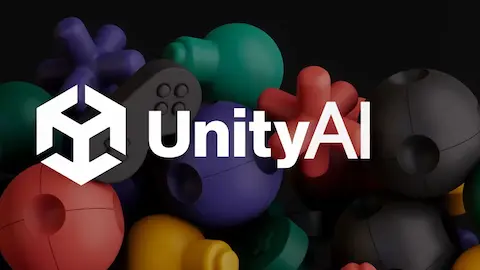

Unity ha publicado su informe anual sobre el estado del desarrollo de videojuegos en 2026, y el documento cambia el tono respecto al año anterior de una manera significativa. Si el informe de 2025 preguntaba "¿puede un estudio sobrevivir?", el de 2026 da la supervivencia por superada y plantea la siguiente pregunta: "¿cómo construir un futuro sostenible?". Basado en encuestas a 300 desarrolladores profesionales y en datos propios de cerca de cinco millones de usuarios del motor en 2025, el informe identifica cinco grandes tendencias que están redefiniendo cómo se hacen los videojuegos.
La más destacada es la apuesta decidida por proyectos de menor escala. Los estudios, después de años de hipertrofiar presupuestos y equipos en la era post-pandemia, están volviendo a proyectos más contenidos y enfocados. La lógica es sencilla: menos riesgo, iteración más rápida y mayor claridad sobre qué es el juego desde el primer dÃa. El informe señala que esta tendencia no es solo económica sino también creativa: los equipos pequeños toman decisiones más rápido y el juego final suele tener una identidad más definida.
En cuanto a promoción y marketing, el 62% de los desarrolladores encuestados apuesta por eventos online y el 60% por redes sociales como sus principales canales. Los eventos presenciales siguen siendo relevantes para el 49%, pero no pueden competir con el alcance potencial y el coste reducido de los medios digitales. La colaboración externa también marca el paso: un 82% de los estudios declara usar colaboraciones y partnerships relacionados con sus juegos, mientras que un 32% está explorando nuevos géneros como vÃa de diversificación de ingresos.
El mercado geográfico que más interesa a los desarrolladores para los próximos años es la India, con un 73% de los encuestados apuntando al subcontinente como su próximo objetivo de expansión. La razón encaja con los datos: el 60% de los estudios ha encontrado su mayor éxito reciente en Asia Central y del Sur. Para los desarrolladores indie que usamos Unity —como es mi caso con Fallen Valkyrie—, el informe confirma que el motor sigue siendo la opción más accesible del mercado: Unity Personal continúa siendo gratuito en 2026 para creadores individuales y equipos pequeños con ingresos por debajo de 200.000 dólares anuales.